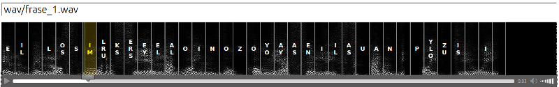

El objetivo del proyecto es evaluar la factibilidad de utilizar software de síntesis de voz para entrenar una red neuronal capaz de reconocer fonemas.
Se utiliza una herramienta de síntesis de voz para generar muestras de voz sintetizadas para un conjunto de palabras y sílabas aisladas. Estas muestras tienen asociado el conjunto de fonemas contenidos en cada una de ellas. Cabe destacar que no se tiene en cuenta el orden ni la repetición de los fonemas, sólo su aparición. El conjunto de datos compuesto por los espectrogramas de estas muestras y sus fonemas asociados se utilizan para entrenar una red neuronal multicapa.
El reconocimiento automático del habla es un problema cuyo tratamiento con algoritmos clásicos es prácticamente imposible, por lo que es necesario aplicar técnicas de inteligencia artificial, como las redes neuronales. Uno de los inconvenientes de este tipo de técnicas es que necesitan de un importante volumen de datos para su entrenamiento.
Lo que se propone en este experimento es generar estos datos mediante la utilización de herramientas de software.
Para generar las muestras de voz sintentizadas se utilizan las herramientas espeak y mbrola.
Actualmente se utiliza la configuración por defecto de pitch, velocidad y amplitud, y la voz "mb-es1".
En una etapa más avanzada del proyecto se realizarán pruebas con valores aleatorios para estos parámetros
Como conjunto de entrenamiento se generan 893 sílabas aisladas, así como 1297 palabras con una longitud máxima de 4 letras.
Para la generación de espectrogramas se utiliza la librería FFTW.
Los espectrogramas generados tienen un alto de 128 píxeles, y un ancho que depende del largo de la muestra.
Se han realizado experimentos con espectrogramas en escala de grises y color para determinar cuales son más adecuados. Se ha decidido utilizar espectrogramas en escala de grises, ya que los color necesitan más neuronas y conexiones, aumentando el tiempo necesario para el entrenamiento, y los resultados no son mejores.
Para la red neuronal se utiliza la librería FANN.
El espectrograma no se presenta completo a la red neuronal, sino que se divide en bandas de frecuencia, y sobre cada banda se calcula una métrica.
Los experimentos se realizaron con 16 bandas de frecuencias. Se compararon las 3 métricas detalladas a continuación para represaentar cada banda de frecuencia:
Utilizando en conjunto Aspereza y Media se obtiene una validación de 25.641 %.
Para mejorar el nivel de detalle, se ha hecho el experimento de biseccionar cada banda de frecuencia en el tiempo, para obtener más detalle. Esto duplica la cantidad de neuronas de entrada.
Ya que en la salida de la red no se toma en cuenta el orden de los fonemas, las dos mitades se reordenan de ser necesario para que la que tenga más peso en las bajas frecuencias aparezca primero.
Los resultados del experimento muestran que aplicar esta bisección no mejora el porcentaje de validación, de hecho disminuye entre un 2% y 3%.
En la capa de salida de la red hay una neurona para cada fonema que se busca reconocer. Un valor cercano a 0 indica la ausencia del fonema, y un valor cercano a 1 su prescencia.
Se realizaron pruebas con diferentes configuraciones de profundidad de la red (medida en número de capas ocultas) y cantidad de neuronas en cada capa.
La pruebas consitieron en entrenar la red hasta que converja, y tomar medidas de porcentaje de validación error medio cuadrado, tiempo y cantidad de iteraciones necesarias. Se considera que la red ha convergido cuando el MSE (Error medio cuadrado) entre una epoch y 100 epochs anteriores es menor a un umbral de 0.0001
Estas pruebas se han realizado con espectrogramas en escala de grises.
| Neuronas por capa | Profundidad | Porcentaje de validación | Error cuadrado medio | Iteraciones | Tiempo |
|---|---|---|---|---|---|
| 32 | 1 | 12.273 % | 0.0407 | 2700 | 00:43 |
| 32 | 2 | 12.935 % | 0.0290 | 2300 | 01:01 |
| 32 | 3 | 14.493 % | 0.0237 | 2800 | 01:42 |
| 64 | 1 | 14.286 % | 0.0323 | 3100 | 01:20 |
| 64 | 2 | 19.283 % | 0.0150 | 1900 | 01:52 |
| 64 | 3 | 18.894 % | 0.0100 | 2300 | 03:32 |
| 128 | 1 | 15.421 % | 0.0240 | 3500 | 02:38 |
| 128 | 2 | 21.525 % | 0.0071 | 2200 | 05:58 |
| 128 | 3 | 20.091 % | 0.0035 | 1800 | 08:20 |
Haciendo un gráfico de la función de error con un learning rate constante, puede verse que el error se hace más errático a medida que aumentan las epochs.
Reduciendo el learning rate en un 10% cada 300 epochs el resultado es mucho mejor.
Se puede ver que la variación del error va disminuyendo progresivamete. Se ven escalones en las epochs donde cambia el learning rate.
Por último, disminuyendo el learning rate después cada epoch en un 0.1%, se puede observar que la curva del error es mucho más suave, y la variación es acotada.Para hacer validación se separa el 10% de las muestras generadas. Estas muestras no son utilizadas en el conjunto de entrenamiento.
Se realizaron pruebas sobre frases completas, generadas con el mismo software que las muestras de entrenamiento.
Para visualizar los resultados, se presenta una interfaz web en la que se presenta el espectrograma, y los fonemas detectados en cada segmento del mismo.
 Interfaz webComo siguiente paso se estudiará cómo se comporta con voces humanas reales, y con diferentes configuraciones de tono, amplitud y velocidad para las voces generadas por el mismo software, y por otros software de síntesis de voz.